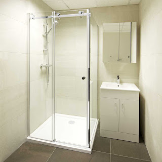
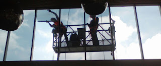
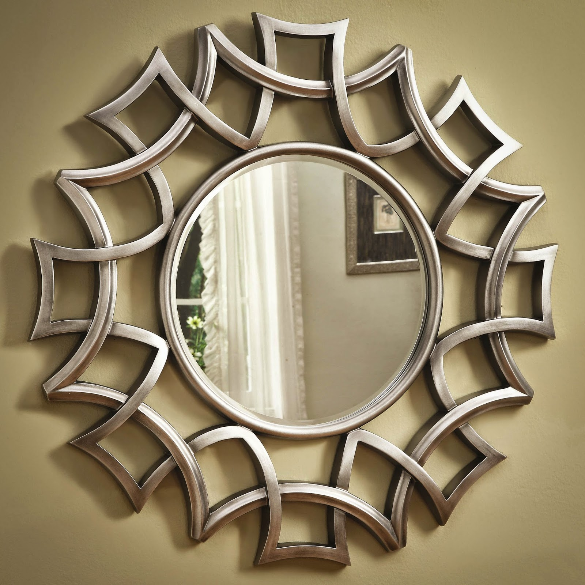

Kaca ialah salah satu elemen yang cukup penting pada sebuah bangunan bagus untuk rumah tinggal, pertokoan, gedung bertingkat ataupun multi use building. Tapi sekarang, pemakaian kaca kian meluas. Kaca juga awam diaplikasikan sebagai material untuk pintu, furnitur, railing tangga, shower box, kanopi, table top, dan malahan panel dinding.
Tak hanya kaca, kini juga sudah hadir material penyokong bagi bangunan yang sedang banyak di bangun yaitu material parket lantai kayu jati.
Distributor & Supplier Partisi Kaca di Bontang

Partisi kaca menjadi pilihan yang pas bagi Anda yang mau menghemat tarif bangunan. Kini, partisi kaca Bontang ini juga untuk rumah hunian. itu, juga tak memakan waktu sehingga Anda bisa menghembat tarif pemasangan. Dalam hal ini, Anda patut tahu jenis kaca apa yang untuk partisi. Kecuali itu, tentukan juga desainnya apakah partisi kaca Bontang frameless (tanpa bingkai) atau dengan pigura. Selain itu, pertimbangkan juga privacy. Ini yang akan Anda menentukan hal yang tepat apakah Anda menggunakan kaca transparan, semi transparan, atau kaca cermin. Biaya pemasangan lebih murah sebab waktu yang lama untuk memasang partisi yang terbuat dari kaca hal yang demikian. Alasan yang ketiga, partisi kaca Bontang ini tak menghabiskan space. Anda seharusnya tahu ada kaca transparan, semi transparan dan kaca yang sama sekali tidak transparan yang acap kali disebut dengan kaca cermin. Partisi kaca dengan kwalitas terbaik dan berkwalitas bisa anda temukan di dis.or.id. Disana anda dapat partisi kaca dengan harga yang amat terjangkau. Disana anda akan partisi kaca yang pantas dengan anda.
Info Pemesanan Selengkapnaya
Google Maps: https://www.google.com/maps/d/viewer?mid=1R8kzChlMY2QK17rdE2QwzgHqdyqkVgbb&ll=-7.27380280025364%2C112.65243155000007&z=18
Note: https://www.facebook.com/notes/distributor-of-industrial-supply/pabrik-supplier-partisi-kaca-kamar-mandi-kantor-r-tamu-dlsb/1785723915060821/
Event: https://www.facebook.com/events/538733799826380/
Distributor & Supplier Kaca Shower

Anda pastinya meninginkan desain kamar mandi rumah layaknya kamar mandi hotel berbintang yang menggunakan kamar kecil duduk serta dilengkapi shower maupun bath tub. Dengan menggunakan kaca shower pastinya kamar mandi yang dimiliki akan lebih tampak mewah dan menjadi sekat antara area basah dan zona kering. Kelebihan shower screen dibanding dengan metode penyekatan yang lain adalah dihasilkan dalam bentuk yang sudah jadi dan tinggal dipasang saja. Jadi sistemnya jauh lebih praktis sebab tidak perlu menyiapkan bahan sendiri untuk membuat sekat ruang. Jikalau pemasangannya juga betul-betul gampang dijalankan dan tak memerlukan waktu yang lama. Apalagi kini sudah ada kios penjual shower screen yang menjual produknya dalam cara satu paket termasuk pemasangannnya.
Tidak anda sedang mencari kaca shower untuk kamar mandi, anda dapat segera mengunjungi dis.or.id. Disana anda bisa mendapatkan kaca shower yang pastinya layak untuk kamar mandi anda. Harga yang ditawarkan malahan tergolong betul-betul murah.
Distributor, Supplier & Jasa Pasang Kanopi Kaca

Seiring dengan perkembangan zaman di dunia properti, kini kanopi kaca telah berkembang cepat mencontoh arsitektur modern. Atap kaca skylight banyak diaplikasikan pada rumah, gedung, kantor, café yang mengusung gaya modern untuk membikin efek sinar yang dramatis pada ruangan komponen bawahnya serta memberi kesan modern pada bangunan. Harga dari tiap kaca yang ditawarkan cukup beragam tergantung kaca yang nanti akan diaplikasikan. Tidak cuma sekadar tembus pandang. Ada banyak opsi varian desain. Kalau tembus pandang, kaca meresap sinar yang masuk sehingga kian tebal kaca maka semakin sedikit cahaya yang dapat melaluinya, maka sifat transparannya makin berkurang.|Di samping pintu kaca shower akan membuat kamar mandi kecil nampak lebih besar. Pada atap akrilik, penyerapan cahaya yang terjadi demikian kecil sehingga meskipun ketebalannya bertambah, sifat transparannya tidak banyak berubah. Atap akrilik atau bisa juga disebut atap kaca acrylic ini banyak ditemukan di sebuah bangunan rumah, seperti ruko, apartemen, cafe, mall, sampai bangunan gedung.
Dis.or.id dapat membantu anda yang mau memasang atap kaca skylight pada gedung, dengan berbagai kelebihan yang dapat anda peroleh dengan memanfaatkan jasa yang di tawarkan dis.or.id. Kecuali disana anda dapat menerima penawaran mengenai jasa pemasanga kanopi kaca. Dis.or.id juga menyediakan jasa pemasangan kanopi kaca yang tentunya dengan bantuan daya professional yang sudah berpengalaman. Banyak bangunan seperti gedung perkantoran, perumahan, ruko dan apartement yang menggunakan kanopi kaca tempered. Setelah kaca untuk atap kanopi cukup digemari.
Jasa Maintenance Kaca

Jasa maintenance kaca menawarkan pelayanan perawatan bahan bangunan yang terbuat dari kaca. Salah satunya pelayanan berupa pembersihan gedung yang terbuat dari kaca. Tidak kaca tidak kusam, karenanya kaca mesti dibersihkan secara regular. Dis.or.id mempunyai daya pakar yang dapat cakap membersihkan gedung pencakar langit yang bangunannya terbuat dari kaca.
Dengan menerapkan bahan pembersih yang akan membuat kaca menonjol bersih seperti pertama kali dipasang. Apabila juga dengan warna dan bentuk kaca.
Dis.or.id memahami semakin banyak gedung pencakar langit dengan betuk yang berbeda-beda. Dis.or.id memiliki segala kekuatan ahli yang di rekrut hanya mereka yang profesional yang tahu persis bagaimana cara menggunakan alat dan bagaimana membersihkan kaca gedung bertingkat. Dengan telah memberikan training terhadap daya spesialis sehingga mereka sudah bisa melaksanakan profesi mereka dengan amat bagus.
Jasa Pemasangan Kaca Tempered

Kaca Tempered ialah salah satu ragam kaca dari sekian banyak variasi kaca yang sering kali diterapkan untuk jendela, pintu, dan partisi. Kian banyak orang yang ingin menerapkan kaca ini. Karenanya dari itu, mereka sudah mulai suka tipe kaca yang satu ini. Selain ini tidak lain sebab semakin banyak orang yang memahami mutu serta keunggulan dari kaca tempered ini.
Seandainya itu, pelbagai komponen properti akan kian menarik bila diwujudkan dari kaca tempered seperti kanopi, pintu, kamar mandi, dan balkon.
Harga untuk tiap pemasangan dijamin termurah dan hasil progres yang pantas dengan harapan anda. Bukan sembarang alat yang dipakai untuk memotong kaca tempered pantas dengan kebutuhan. Lebih dari itu, dis.or.id sudah menyiapkan kekuatan pakar yang siap untuk melakukan pemasangan, entah itu kaca tempered untuk kanopi, pintu, partisi, balkon, dan lain sebagainya.
Distributor & Supplier Pintu Kaca

Sekarang sudah hadir ratusan pintu kaca dengan desain yang berbeda-beda yang dapat di buat dan di pesan, entah itu pintu kaca frameless (tanpa bingkai) atau pintu kaca dengan bingkai. Ada banyak desain pintu kaca yang dapat kita temui seperti pintu kaca berbentuk sliding (geser) atau folding (lipat). Tidak Anda menyenangi dengan pintu kaca dengan pigura, Anda dapat pilih apakah pigura tersebut terbuat dari bahan kayu atau alumunium. Mengenai modelnya, Anda dapat putuskan apakah ingin memiliki pintu kaca desain lipat, geser, atau teladan yang lain. Tersedia beberapa tipe kaca dengan mutu yang terbaik, mulai dari kaca tempered sampai yang non-tempered. Kini paling banyak diminati saat ini yaitu kaca tempered sebab jauh lebih kuat dan tahan lama.
Anda dapat memiliki pintu kaca unggulan anda kini juga dengan mengunjungi dis.or.id. Jika spesialis yang sungguh-sungguh profesional sehingga sangat siap untuk menciptakan pintu kaca seperti apa yang mau Anda miliki.
Kaca yang di gunakan ialah kaca dengan kualitas terbaik.
Jual Kaca Cermin

Kaca cermin dapat diwujudkan aksesoris untuk mempercantik interior rumah Anda. Kaca cermin juga diwujudkan untuk yang lain seperti pintu. Ukurannya bahkan bisa Anda sesuaikan dengan keperluan. Ada cermin persegi yang dilekatkan beraturan, cermin berbentuk seperti daun, dan lain sebagainya. Malahan, ada juga desain kaca cermin yang unik.
Tidak saja, desainnya saja yang dirubah. Bahkan, ada juga furniture berupa pintu yang terbuat dari kaca cermin. Maka hanya persegi atau persegi panjang. Cermin ini biasanya ditempatkan di kamar mandi, di atas wastafel, atau di kamar tidur. Jadi, orang di luar tidak bisa melihat Anda berada di dalam. Harga yang terjangkau dan mutu terbaik ialah ciri khas dari dis.or.id. Namun kunjungi dan dapatkan informasi menarik mengenai kaca cermin impian anda. Disana anda dapat mendapatkan kaca cermin yang cocok dengan keinginan anda.
Jasa Pemasangan Railing Kaca
Railing kaca merupakan alternatif yang pas saat Anda menghendakin desain interior rumah yang minimalis. Lupakan bahan seperti kayu. Pemilik rumah berharap sekali memiliki interior yang demikian itu minimalis. Tapi, Anda semestinya pastikan railing kaca berkwalitas terbaik. Sebaiknya pakai kaca tempered karena macam kaca ini betul-betul kuat. Tapi, bukan cuma model yang sebaiknya Anda jadikan pertimbangan saat berkeinginan memesan railing kaca ini. Melainkan kaca pecah, kaca tempered tidak akan melukai orang yang terkena kaca tempered tersebut lantaran pecahan demikian itu kecil dan lembut, tak berupa kepingan yang runcing.
Anda bisa memilih kaca dengan kwalitas terbaik. Anda dapat pertimbangkan untuk menggunakan kaca tempered. Ada kaca tempered yang kini diminati banyak orang. Jika itu, jikalau terjadi bencana gempa bumi dan rupanya kaca pecah, kaca tempered ini akan pecah dan membentuk pecahan yang sungguh-sungguh kecil dan lembut. Bila kaca, amati juga aluminum yang menjadi bingkainya. Kini pasti, railing kaca ini menjadi pilihan yang ideal.
Harga yang betul-betul ekonomis serta mutu terbaik yang sudah terjamin membikin anda tidak akan menyesal membeli railing kaca di dis.or.id. Tentu dengan harga yang murah namun konsisten berkelas.
Distributor & Supplier Pintu Lipat Kaca
Bukan cuma komponen depan saja yang dipasang pintu kaca lipat namun bagian dalam juga dapat. Lalu, berapakah harganya? Anda mungkin mengira bahwasannya kaca ini ditawarkan dengan harga selangit. Tetapi diakui bahwasannya ada variasi kaca yang harganya di bawah kaca tempered. Namun, Apabila Anda hitung kembali, selisih harganya tidaklah terlalu banyak.
Timbul pertanyaan mengapa Wajib menggunakan kaca tempered. Dengan demikian, cahaya matahari di siang hari dapat masuk ke dalam ruangan. Dan dengan adanya pintu kaca ini, keamanan kian bagus. Hinges adalah aksesoris vital, sebab aksesoris inilah yang berperan untuk menyangga berat pintu kaca lipat. Jadi, bukan cuma pintu saja yang berupa kaca, melainkan juga seluruh sekat ruangan.
Jasa Pemasangan Kubikel Toilet
Kubikel kamar kecil memiliki desain yang mewah dan elegan sehingga siapa saja yang memandangnya pasti akan berminat, tak cuma itu kubikel kaca memberikan kesan bersih, rapid an tersusun. Banyak profit yang bisa di daptkan dengan menggunakan kubikel kamar kecil diantaranya merupakan tampilan yang lebih elegan dan lebih bersih.
Jikalau anda berminta untuk membeli kubikel kaca, anda dapat mengunjungi dis.or.id. Kaca juga bisa menjadi solusi estetika kamar mandi, tapi juga dapat jadi problem jika Anda memakai material dan daerah yang salah. Sebab disana terdapat kubikel kamar mandi dengan bermacam-macam ukuran serta ketebalan kaca.
Jikalau anda mau memiliki kubikel kamar mandi ini, anda dapat mengunjungi web dis.or.id.
Justru embun dapat melekat di kaca dan lambat laun dapat membuat kaca tak sejernih semula. Kaca shower yang di jual di jamin kaca shower yang memiliki kualitas terbaik dan berkwalitas tinggi.